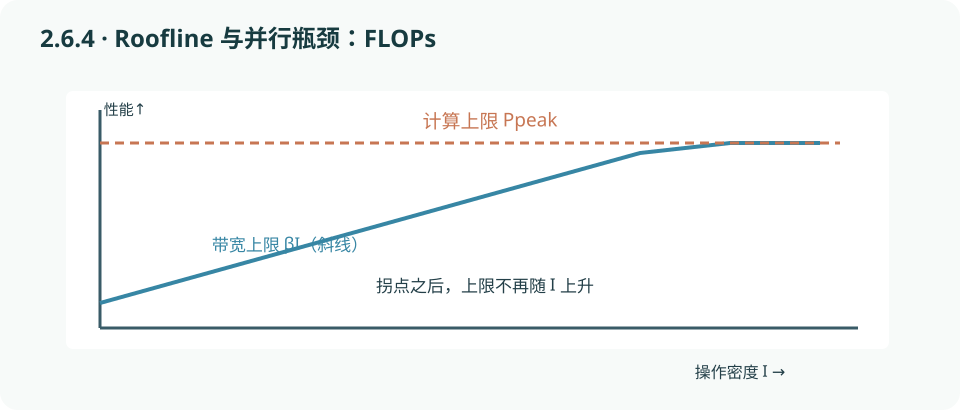

CHAPTER 02 · LINEAR EQUATION SOLVING
Roofline 与并行瓶颈：FLOPs 很多也可能跑不快
从算术密度和访存带宽解释性能屋顶，再用 Amdahl 定律指出线程数不能消除串行依赖。
一次矩阵运算不仅消耗乘加单元，也需要从内存层次取出 A、B、C。某些算法的理论 FLOPs 很多，但每个数据只使用一次，内存带宽决定速度；另一些内核可以把同一个数据重复使用，才有机会接近计算单元上限。并行还受串行部分、同步和通信约束。
把 CPU 核数翻倍，为什么某些线性代数程序仍几乎不变快？

Roofline 的两个上界来自两种不同资源
设处理器持续计算峰值为 P_peak FLOP/s，内存带宽上界为 β byte/s，算法相对于选定内存层次的算术密度为 I FLOP/byte。性能上界 P ≤ min(P_peak, βI)。当 βI<P_peak 时，属于访存受限；当 βI≥P_peak 时，理论屋顶由计算能力给出。
这个模型本身不保证达到屋顶：指令依赖、访存访问模式、缓存缺失、向量化效率、调用开销和负载不均衡仍可让实际速度更低。峰值、带宽和算术密度必须在同一层次与测量口径下定义。
GEMV 和 GEMM 为什么落在不同位置
GEMV 的主导运算 2n² FLOPs 与主导矩阵读取约 8n² 字节同阶，I 大致不随 n 增长。理想复用的 GEMM 却能把 O(n³) FLOPs 组织在 O(n²) 规模的数据流之上，运算密度随块大小和矩阵规模增加。
因此分块 GEMM/BLAS3 常对深度学习、稠密分解和多右端项求解至关重要；不过如果数组太小、转换布局频繁或者线程启动成本过大，基于大问题的优化直觉可能不再成立。
Amdahl 定律限制可并行部分的收益
若原工作量有比例 f 完全不可并行，其余部分可在 p 个处理单元上理想平均分配，Amdahl 理想加速比 S(p)=1/(f+(1−f)/p)。当 p→∞，最多也只有 1/f。同步、通信和负载不均衡会进一步降低真实加速。
在分块 LU 中，尾随 GEMM 的并行性很高，panel 因数据依赖较强而有一定串行比例。减小 panel 成本、将数据批量送入高效 GEMM，常比盲目增加线程数更有效。
一张屋顶线不是硬件 benchmark
网页使用人为设定的 P_peak=200 GFLOP/s、β=50 GB/s，拐点 I=P_peak/β=4 FLOP/byte。滑动算术密度 I，可以精确计算示例上界 min(200,50I)，并在图中标出由带宽屋顶过渡到计算屋顶的位置。
这些数字只是便于手算的示意参数，与用户机器或云主机无关；实验代码只验证公式和单调性，不会伪造任何平台 GFLOP/s 实测值。
测量方法比华丽图表更重要
实际测量要约定精度、矩阵形状、存储顺序、BLAS 库、线程绑核/线程数、数据热度、预热次数、重复次数和能耗约束。大规模计算还应考虑 NUMA、网络互联和并行规约误差。
如果高精度解和高性能不可兼得，应明确误差预算、条件数、残差和任务目标；一次高峰吞吐并不代表整个求解器从输入到诊断的耗时最短。
交互探索：把 CPU 核数翻倍，为什么某些线性代数程序仍几乎不变快？
切换解释侧重点，并滑动数值参数，观察清晰定义的模型。
设处理器持续计算峰值为 P_peak FLOP/s，内存带宽上界为 β byte/s，算法相对于选定内存层次的算术密度为 I FLOP/byte。性能上界 P ≤ min(P_peak, βI)。当 βI<P_peak 时，属于访存受限；当 βI≥P_peak 时，理论屋顶由计算能力给出。
所示为数学模型计算而非实测性能；可使用键盘方向键调整滑块。